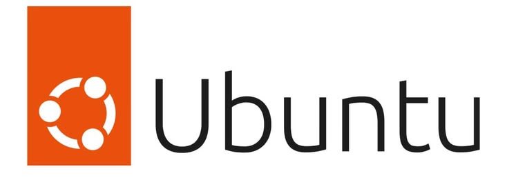

Homelab
Mon environnement personnel d'expérimentation dédié à l'administration Linux, à la virtualisation, aux réseaux informatiques et à la cybersécurité. Chaque laboratoire me permet de transformer les connaissances théoriques en compétences pratiques.
Infrastructure actuelle

Poste principal
Lenovo ThinkPad Core i5 (8e génération)
VirtualBox
Virtualisation des environnements de test.

Ubuntu
Administration Linux et services système.
Kali Linux
Cybersécurité et outils d'analyse.
Cisco Packet Tracer
Simulations réseau et protocoles TCP/IP.
Visual Studio Code
Développement et automatisation.
Évolution prévue
Docker
Déploiement de services conteneurisés.
Active Directory
Domaine Windows et gestion centralisée.
pfSense
Pare-feu et routage avancé.
VMware
Virtualisation professionnelle.
0x430 Shadow Ops
0x430 Shadow Ops est le QG opérationnel d'un collectif d'étudiants en Didactique de l'Informatique et Technologie, réunis par une même ambition : développer des compétences techniques solides grâce à l'autodidaxie, à la pratique quotidienne et au partage des connaissances.
Notre communauté transforme les connaissances théoriques en compétences réelles à travers le développement Web, la programmation, les bases de données, la bureautique avancée et la réalisation de projets concrets. Notre philosophie repose sur une règle simple : « 1 Jour = 1 Compétence ».